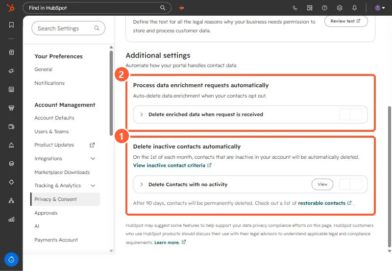

Short answer
Under Privacy & Consent, Additional settings, Delete inactive contacts automatically deletes inactive contacts on the 1st of each month. HubSpot checks Create date, Time of last session, Last marketing email open date, and Last engagement date against the inactivity period you set. Deleted contacts can be restored for 90 days, then they are permanently deleted. It is off in my demo. A second setting deletes enriched data when a contact opts out.
1. Where it is
Open Privacy & Consent and scroll to Additional settings.


2. How inactive is defined
HubSpot checks four properties against your inactivity period: Create date, Time of last session, Last marketing email open date, and Last engagement date. A contact is inactive if it was created before the period and those values are unknown or not updated within it.
- Deletion runs on the 1st of each month.
- Deleted contacts go to the recycling bin for 90 days, then are permanently deleted.
- HubSpot recommends assessing the impact on reporting first, since deleted contacts leave your reports.
3. The other setting
Process data enrichment requests automatically deletes enriched data when a contact opts out. See data enrichment settings.